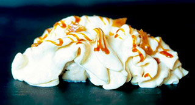

"Omelette surprise" de alcachofas y Foie Gras al caramelo.
"Un trampaantojo, parece un helado Alaska, pero no..."

| Caldo de ave | 100 ml. |
| Crema de leche | 100 ml. |
| Micuit de foie gras | 75 gr. |
| Sal | 1 cc. |
| Pimienta blanca | 1/4 cc. |
| Nuez moscada | 1/4 cc. |
| Carga de gas | 1 un. |
 |
|
| Alcachofas | 8 un. |
| Agua mineral | 2 l. |
| Perejil | 8 ramas |
| Mantequilla | 50 gr. |
| Aceite de oliva | 25 ml. |
| Sal | 4 gr. |
|
|
| Azúcar | 160 gr. |
| Mantequilla salada | 60 gr. |
| Crema de leche | 115 ml. |
- En un cazo colocar el caldo, la nata, la sal y las especies y llevar a ebullición.
- Mientras cortar en trozos grandes el micuit de foie.
- Una vez arranque el hervor, retirar del fuego, añadir el foie y dejar "infusionar" 5'.
- Transcurrido este tiempo triturar con la ayuda de un túrmix. Pasar por un colador fino y rectificar de sal.
- Rellenar el sifón con la mezcla, tapar y añadir una carga de gas.
- Colocar en la nevera para que enfríe.
- Limpiar las alcachofas hasta conseguir los fondos. Sumergir en el agua mineral con las ramas de perejil.
- Añádir sal y colocar al fuego. Una vez arranque el hervor cocer 4'.
- Escurrir, enfriar y reservar.
- En un cazo o sartén colocar el azúcar, poner a fuego lento y dejar que vaya tomando color.
- Una vez conseguido el color deseado, retirar del fuego y añadir la mantequilla salada cortada a trozos.
- Mezclar bien y volver al fuego, colocar éste al mínimo y añadir la nata batiendo para que se incorpore correctamente.
- Dejar reducir unos minutos. Una vez alcanzada la textura deseada, retirar del fuego y dejar enfriar. Acabado/Presentación
- Calentar una sartén antiadherente, añadir un poco de mantequilla y el aceite.
- Una vez caliente, dorar ligeramente los fondos de alcachofa por los dos lados. Colocarlos longitudinalmente en el centro de un plato.
- Agitar el sifón. Cubrir con la espuma de foie y añadir unas gotas de caramelo salado.